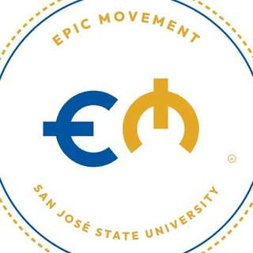

Large Group Gatherings
Every Wednesday evening we gather for worship, practical biblical teaching on identity in Christ, and a free campus dinner together.

Welcome to Epic Movement at San José State University, an Asian American collegiate ministry affiliated with Cru and partnered with Southbay Community Baptist Church. Whether you are curious about faith or seeking meaningful fellowship, we have gatherings, small groups, and spiritual resources for you to explore and engage.
Whether you are taking your first steps in investigating Christianity or looking for lifelong friendships at SJSU, find a rhythm that fits your week.
Every Wednesday evening we gather for worship, practical biblical teaching on identity in Christ, and a free campus dinner together.
Join a welcoming small group in the Student Union to study Scripture, ask honest questions, pray together, and share life on campus.
Explore foundational questions about God's love, prayer, reconciliation, and living out Scripture with curated talks and guides.
Hear directly from SJSU students, student leaders, and speakers about finding rest, belonging, and purpose.
"I'm going to take a bit of a break from schoolwork as well as try and build relationships with these people in Epic. I think there are some friends that I want to grow closer with, and I also want to learn more about the Word of God."
"Why should someone go if they're still on the fence? Personally, one of my best experiences was going on a retreat with church and finding my relationship with God changing a lot."
"We're going to have an amazing time looking at what the gospel is, how it transforms our identity and our relationship with God, and how you can be an expression of the gospel."
"Praise the Lord! If you're looking for community, come and see if you can find it here. This is a great way to build friendships, grow in your walk with God, and share life with one another."
We would love to connect with you, answer your questions, or save you a seat this week.
Epic SJSU is an Asian American Christian collegiate community committed to building genuine Christ-centered friendships, exploring faith honestly, and encouraging spiritual growth through Scripture, prayer, and authentic community.
We welcome students from every background, culture, and major at San José State University to ask real questions, find spiritual family during college, and discover God's purpose for their lives.
Creating a warm, open door on campus where students investigating Christianity or seeking friendship feel genuinely known.
Rooting our lives in the gospel through weekly Large Group messages, Community Group Bible studies, and 1-on-1 mentoring.
Equipping students to share the joy of Christ across SJSU, partner with the local church, and serve communities beyond campus.
Snapshots from weekly fellowship, campus meals, retreats, and serving together.
Reach out anytime for coffee chats, Bible study questions, or campus rides.
Serving college students at SJSU after more than 22 years of pastoral ministry. Dedicated to walking alongside students in Scripture, discipleship, and leadership.
Focused on cultivating an inviting, close-knit community where students can ask real questions about prayer, faith, and encourage one another weekly.
Computer Science major passionate about Campus Community Groups, gospel-centered encouragement, and helping peers navigate college life.
Our partnering local church in San José is Southbay Community Baptist Church. Pastor Rob Jeon and the church family warmly welcome SJSU students for Sunday morning worship, multigenerational fellowship, and home-cooked hospitality—with free campus carpools available every Sunday.
We would love to connect with you and help you find your place at SJSU.
Real questions surfaced in our student Spiritual Growth group—whether you are investigating Christianity or learning how to walk closely with God.
Start with honest prayer and curiosity. As shared from our growth group's reading on prayer, you do not need perfect theology or polished religious words before talking to God. Bring your questions openly in prayer, explore Scripture alongside friends in a Community Group, and hear how God speaks through His Word.
The reason for God's love is not our performance—it is simply who He is: God is love. His love is infinite, uncountable, and unconditional. Our mistakes and sins do not shrink His heart toward us; in Christ Jesus, nothing in all of creation can separate believers from His love.
Reconciliation is repairing and making alive a relationship that was once separated and spiritually dead. Foundationally, Jesus loved us and gave Himself for us—dying for the forgiveness of sins, being buried, and rising on the third day to bring us to God. Putting sin to death (mortification) happens through looking at Jesus day by day: remembering what He has done and is doing, and sharing that joy with others.
Ask God directly in prayer and listen for Him through the Holy Spirit in His Word, the Bible. Scripture promises that God's Word accomplishes what He purposes and will never return empty. Remind yourself daily of the Triune God who loves you: God as your loving Father (who adopted you as a child permanently), Jesus as your greatest treasure, and the Holy Spirit as your Sanctifier, Spirit of life, Spirit of truth, and wonderful Counselor.
Echoing Peter's words ("Where else would we go? Jesus has the words of eternal life"), lasting rest comes from knowing Jesus' gentle and lowly heart—whose yoke is easy and whose burden is light—and knowing the end of this life is enjoying Jesus eternally in all His glory.
No. Rather than burdensome boxes to check off, God's commandments are pathways designed for human flourishing—leading into wisdom, life, love, joy, and all the fruit of the Spirit.
Reflections shared across our student group between March and October on prayer, God's character, missions, and wisdom.
Encouragement for seekers and new believers: prayer is an accessible first step for anyone investigating Christianity—an honest conversation with a listening God.
God loves us like a good Father who delights in His adopted children not because we earn it, but because His steadfast status toward us in Christ never changes.
By Christ's death, burial, and resurrection, separated relationships with God are made alive again—turning daily reminders of grace into real freedom from sin.
Coming to Jesus brings deep soul rest in the present and unshakable hope for eternity: enjoying Christ forever in peace, joy, and love.
Hearing peers share lessons from serving communities like the Navajo Nation reminds us how God shapes ordinary students when we step out in love and humility.
God's guidance in Scripture is given for our flourishing—cultivating lasting wisdom, life, love, joy, and the fruit of the Spirit.
Videos and teachings shared in our Spiritual Growth chat to watch on your own or discuss with a Community Group.
A restful reminder that Jesus holds the words of eternal life, His yoke is easy, and the goal of our faith is enjoying Jesus eternally in all His glory.
Encouraging student testimonies and lessons learned from serving on the summer mission trip to the Navajo Nation. Tip: Fast-forward to 41 minutes in.
A thoughtful look at why God's commandments are far more than rules to check off—pointing toward wisdom, life, love, joy, and the fruit of the Spirit.
We would love to grab coffee, pray with you, or read Scripture together on campus.
Mondays, 3:30 PM – 4:45 PM at SJSU Student Union (tables above Jamba Juice). Open to guys and girls of all majors to study Philippians and share life together. Led by Jonathan Aye & Jerry Wong.
Thursdays, 2:30 PM – 3:45 PM at SJSU Student Union (tables above Jamba Juice). Same Bible study content and welcoming space to build friendships and grow in faith. Led by Nathan Wong & Kadin.
Wednesdays, 5:00 PM – 6:30 PM at Dudley Moorhead Hall (DMH 231). Weekly gathering for worship, Bible teaching, and free dinner. Led by Jerry Wong, Nathan Wong, and Jonathan Aye.
Wednesdays, 6:30 PM – 7:30 PM at Student Union outdoor tables and campus courts. Volleyball, Pizza My Heart, and outdoor Korean BBQ socials after Large Group.
Nov 13–15 at Daybreak Camp in Felton, CA. 5 meals, 4 speaking sessions with guest speaker Young Lee, campfire, beach time, and cabins ($75; scholarships available).
Sundays, 10:00 AM English Service at Southbay Community Baptist Church in San José with Pastor Rob Jeon. Campus rides available every Sunday.
Reach out to our student leaders anytime for carpools to Sunday service or campus meetups.